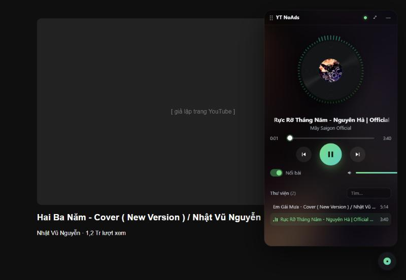
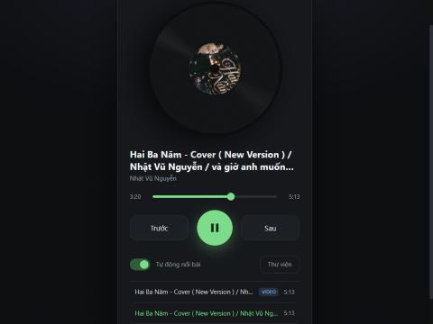
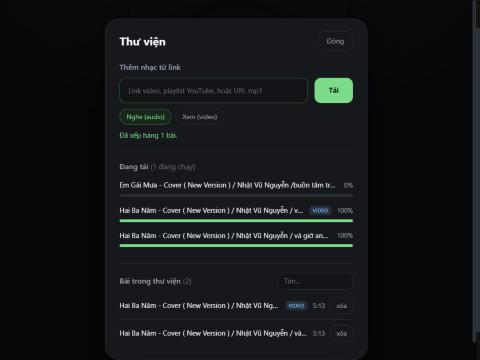
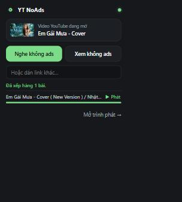

🎛️
Floating player on YouTube
A vinyl button sits in the corner of every YouTube page. Open it into a draggable panel that keeps playing while you browse.
Save any video or playlist to your own computer, then listen or watch it ad-free in a floating vinyl player — right on top of YouTube.
A tiny extension plus a local helper. No accounts, no servers, no tracking.
A vinyl button sits in the corner of every YouTube page. Open it into a draggable panel that keeps playing while you browse.
Spinning vinyl with cover art, audio-reactive visualizer ring, bass-driven glow, ambient background and marquee titles.
The panel detects the video you're on → Listen or Watch → it downloads and auto-plays when ready.
Add single videos, whole playlists or direct mp3 links. Download queue with progress, search and delete.
Listen saves light m4a audio; Watch saves mp4 up to 720p (configurable up to 1080p+).
While the mini player plays, YouTube's own video — including autoplaying ads — is paused automatically.
Right-click menu, Alt+Shift+A, keyboard media keys, Space ← → N P in the player.
Everything you saved is a plain file on your disk. Plane, train, bad Wi-Fi — it still plays.
The helper only listens on 127.0.0.1 and rejects requests from websites. Nothing leaves your machine.




An extension alone can't download YouTube streams, so a tiny helper powered by yt-dlp does the heavy lifting — locally.
The extension never talks to any server other than the helper on your own computer.
Not on the Chrome Web Store (its policy bans YouTube downloaders) — install it unpacked instead.
Get yt-noads-player-<version>.zip from Releases and unzip it to a folder you'll keep.
Windows: double-click the file below. The first run sets everything up automatically.
helper\start.bat # macOS / Linux: ./helper/start.sh
Open chrome://extensions → turn on Developer mode → Load unpacked → choose the extension folder.
Reload any YouTube page — the vinyl button appears bottom-right. Optional: auto-start the helper at sign-in:
powershell -ExecutionPolicy Bypass -File helper\install-autostart.ps1
Store policy doesn't allow extensions that download YouTube videos, and the store couldn't ship the Python helper anyway. Load unpacked works the same.
No. It plays your saved copy instead of YouTube's stream, so there are no ads in it. For ad-free viewing on YouTube itself, consider YouTube Premium.
In ~/YTNoAdsPlayer/media — plain .m4a / .mp4 files you can open in any player. The location is configurable.
YouTube changes often. Run helper\update-yt-dlp.bat and restart the helper. Private, age-restricted or region-locked videos can't be downloaded.
Not tested yet. The code is Manifest V3 and mostly portable — pull requests welcome.
YT NoAds Player is free and open source. If it saves you time, a small tip keeps it maintained.